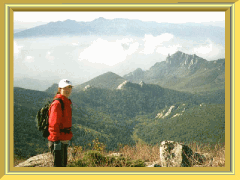

小川山キャンプ | ９９年１０月９〜１１日 |
|  | 小川山キャンプ場（長野県・本来は廻り目平キャンプ場ですが、我々の間では小川山と呼んでいます）でのキャンプです。 １０名ぐらいで行ったのですが、クライミングをやるモノ、登山をするモノと、わかれました。私は登山を選び、近くの金峰山（日本百名山の一つ）へと、加藤さん（左写真）と登りました。 すばらしくいい天気で、遠くの富士山や、八ヶ岳等も望めました。 しかし、小川山キャンプ場からのコースは結構きつく（地図も持たずに行ったのが良くない）、その分山頂到着時の喜びはたとえようもありません。 山頂は結構混んでいて、シャッター押しを頼まれることも数回。子供なんかもいました。ぜひ、みなさんにも登ってもらいたいところです。 |
| さて、クライミングをやっていた方々は、どうだったでしょうか？（私は知りません） ココは、クライミングのメッカでもあるので、いろいろなコースが楽しめます。私も前回登ったときは、見晴らしがよく、しかも紅葉の季節なので最高でした。 キャンプ場は、かなりの人で込み合っていましたが、夜は鍋をつつきながら宴会です。酒飲みが（訂正：大酒のみが）二人ほどいたので、一升瓶が一晩で空き（その二人で飲み尽くした）場を盛り上げていました。 １０月といえど、標高が高いこともあって、夜は結構冷えます。それなりの準備をして、行くのが良いでしょう。 |  |